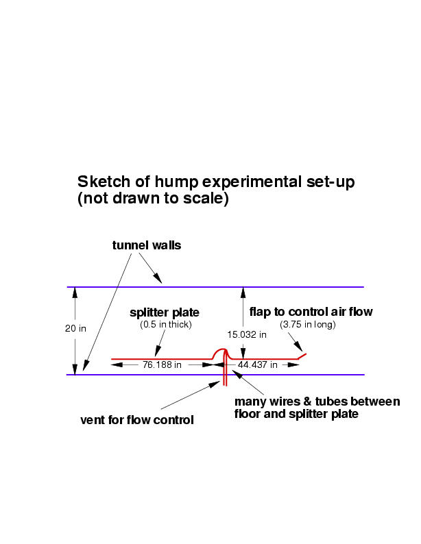

|
Langley Research CenterTurbulence Modeling Resource |
Exp: CFDVAL2004 Case 3 Frequently Asked Questions
Return to: CFDVAL2004 Case 3 - Intro Page
Return to: CFDVAL2004 - Intro Page Return to: Data from Experiments - Intro Page Return to: Turbulence Modeling Resource Home PageQ:Is there any information available on the boundary layer thickness on the TOP wall (at say, x/c=-2.14)?
A:The top wall boundary layer thickness at x/c=-2.14 was measured (using a pitot probe) to be 0.849 inches when U/Uinf=99%. The corresponding top wall displacement thickness was 0.0866 inches.
Q:Is there any boundary layer control being used on the top wall?
A:No.
Q:Is the experimental setup the same as described in the Reno paper AIAA 2003-0218 (Viken et al)?
A:In AIAA 2003-0218, CFD was used to compute the hump model of Seifert and Pack. The current hump model being used in this workshop is a very similarly-shaped model to that used by Seifert and Pack (at a different scale), but it is not identical in all respects. Also, the current test is conducted in a different wind tunnel, and the current model is mounted on a splitter plate.
Q:Are there any mass flow measurements through the channel available?
A:No.
Q:Why are my Cp values shifted with respect to experiment at all locations (even upstream of the model)?
A:CFD should be expected to agree reasonably well with experimental Cp levels upstream of the model (e.g., -0.8 < x/c < 0). Any significant shift in this region may indicate a problem with reference conditions used to process CFD's Cp data. The reference conditions used in the experiment are upstream of the model, where M=0.1. The definition of pressure coefficient is Cp=(p-pref)/(½rhorefuref2). Basically, what you want in your code is to use the same reference conditions upstream where M=0.1. If you are running one of the "traditional" farfield-type CFD codes, then your Mach number upstream may end up being slightly different from 0.1 and/or pref may not correspond with the reference Mach number; and small differences at this low a Mach number translate to significant differences in Cp. Two ways to fix this are: (1) re-process your Cp levels to use an appropriate reference pressure from upstream, rather than the one chosen by the code at the outflow plane; or (2) adjust the back pressure at the outflow plane so that the correct reference level is achieved in the simulation.
Q:What is the value of Cmu for the Case 3 suction case?
A:The target Cmu is 0.242%, which corresponds with the Cmu from Seifert & Pack of 0.2545% with the old chord definition (see Case 3 intro page for a discussion on this). So with the new 5% longer chord, target Cmu for the current test is 0.242%. Note that uncertainties in measuring mdot get magnified when computing Cmu. So actual Cmu can vary from test to test by as much as 3-4%. However, this level of uncertainty makes no perceptible difference in the measured results. From the CFD perspective, it is best to try to match the mdot (0.01518 kg/s) from the experiment.
Q:What is the nominal tunnel "freestream" turbulence level in the 28 x 20 inch tunnel?
A:In previous testing, data were taken with a single normal hot-wire (u component only) with a bandwidth of 1.56 Hz to 10 kHz. After removing the component that seems to be coming from structural vibration, the Tu level was 0.09% at M=0.1. (The part of the spectra involved in structural vibration was frequencies below 20 Hz. Note, this does not mean that everything below 20 Hz was thrown out; only the portion that correlated with accelerometer measurements was removed.)
Q:Can you explain the splitter plate set-up?
A:An explanation of the wind tunnel and
splitter plate set-up can be found
on the Case 3 intro page. Also, here is a rough sketch
showing some details:
 Q:Is there any dominant frequency present in the unsteady
structures of the separated flow? A:To date, no downstream hotwire data have been taken to
answer this question definitively. However, unsteady surface
pressure data show no indication of any clear dominant
frequency. Q:What was the reattachment point measured in the
experiment? A:For the no-flow-control case, the oil film
technique was used to measure wall shear stress.
This technique indicated an approximate mean reattachment point at x/c=1.11.
The flow is highly unsteady at reattachment as indicated by the peak in Cp' at this location.
The uncertainty associated with this location is x/c=1.11+/-0.003.
Oil film has also recently been used to determine the reattachment point for the suction case:
it is x/c=0.94 +/-0.005. Q:Can you describe the piston arrangement for the
oscillatory (optional) Case 3 condition? A:The piston assembly (or "synthetic jet unit")
is mounted at the bottom of the
hump cavity, which extends 1 inch (or y/c = 0.06052) below the top of the splitter plate floor
(as shown under Case 3 Geometry as well as in the supplied grids).
The piston itself is constructed in a similar fashion to the piston for Case 2.
It consists of a solid plate mounted on a flexible membrane, and is driven
electro-mechanically. The flexible membrane face is approximately 23 inches wide
(in the spanwise z-direction) by 2 inches long (in the streamwise x-direction);
and the solid plate, approximately centered on the membrane, is approximately
22.53 inches wide (in the spanwise z-direction) by 1.59 inches long
(in the streamwise x-direction) by about 0.035 inches thick (in the vertical y-direction).
At rest, when the piston assembly is mounted at the bottom of the
hump cavity, the flexible membrane is located approximately 1.122 inches below
the top of the splitter plate floor, and the piston face is located approximately 1.087
inches below the top of the splitter plate floor. It is important to note that use of
the piston assembly (or "synthetic jet unit") changed the blockage beneath the
splitter plate, compared to when the "suction unit" was used for the no-flow-control and
steady-suction conditions. As a result, the incoming flow field above the plate
was slightly affected. The effect on Cps was fairly small. See additional discussion under
Case 3 Details and Submission Guidelines and
Case 3 Experimental Data. Q:For the oscillatory (optional) Case 3 condition,
precisely where and how is the peak velocity out (of 26.6 m/s) being measured? A:The peak velocity out is being measured at the jet exit
approximately along an imaginary line level with the hump surface.
The slot is being calibrated (with the tunnel flow off) at the center-span location on the model. A hot
wire will be placed in the "top-hat" region of the (oscillatory) issuing
jet, i.e. the constant velocity core region of the jet. Data for a large number of
cycles will be acquired and the average of the peaks will be computed.
Uncertainty will be given, and sensitivity of the global flowfield to parametric
variations in the peak velocity (or <cmu> based on rms velocity) will be determined. Q:How can I account for endplate blockage in my CFD
computation? A:One way to account for endplate blockage is to run the SAME
configuration as experiment; this means a 3-D computation, including the endplates inside
the tunnel. Alternatively, the endplate blockage can be
approximately accounted for in a 2-D computation by
(crudely) contouring the tunnel top wall shape to reduce the local tunnel area
by an appropriate amount. Note that the endplate blockage issue was not recognized
at the time of the workshop (March 2004). Grids have since been created with an
adjusted top wall shape. See, for example,
2DWMH: 2D NASA Wall-Mounted Hump Separated Flow Validation Case. Q:What were the measurement uncertainties for the
Case 3 experimental data? A:The measured pressure coefficients were accurate to +/-0.001, the measured
velocity uncertainty was less than 3%, and the worst case uncertainty error
in turbulence quantities was approximately +/-10%. The experimental
details are reported in AIAA Paper 2004-2220 and AIAA Paper 2005-0485.
Return to: CFDVAL2004 Case 3 - Intro Page
Responsible NASA Official:
Ethan Vogel
Page Curator:
Clark Pederson
Last Updated: 05/15/2021